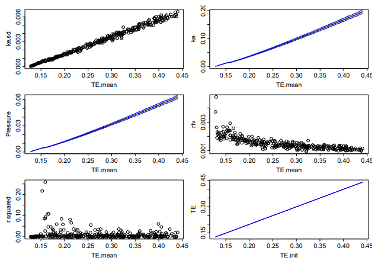
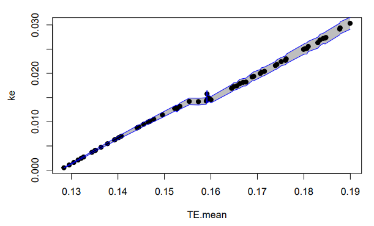
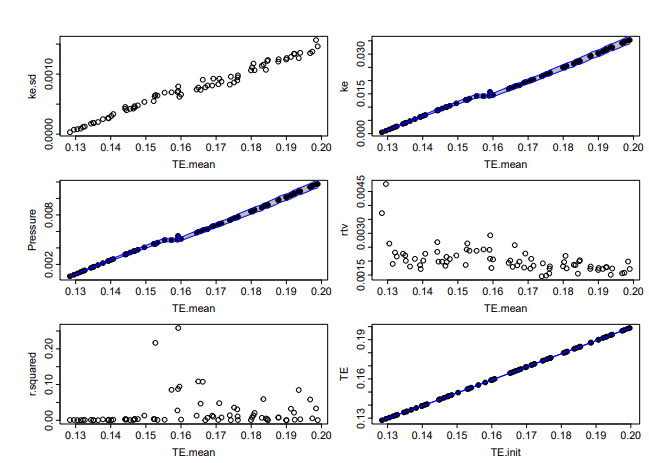
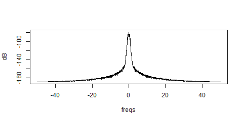
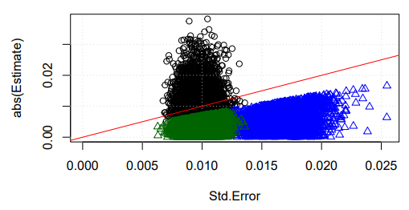
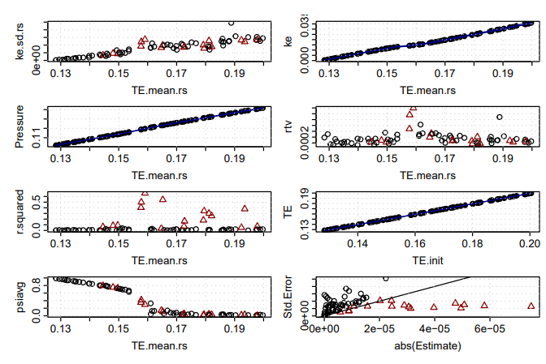
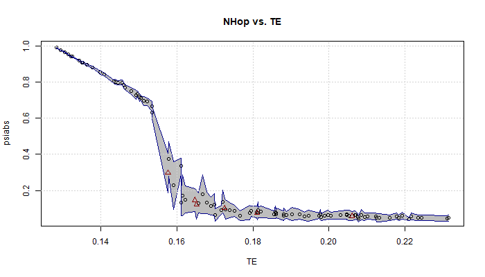

len <- 50
(len3 <- floor(len/3))
trials <- 10000
q <- t( # need to transpose the result of replicate
replicate( trials, findlmlen( data.frame( step = 1:len, ke = rnorm( len)))))LabNotebook
Lab Notebook
This document contains the basic record of experiments nd runs for two dimensional molecular dynamics simulation.
The code was started in Mathematica in early 2024, but that was abandoned when it became clear that it was too hard to debug. Investigated a few possible alternatives, and decided on Julia as the best language to do high performance computing.
The first check-in was on 23 May 2024. The first full run with stable potential energy was a month later.
Runs From Initialization
The first series of runs were from initialization, which was simpler than the 1980 Thesis code. The 1980 code used a technique described as “one which would be expected of an harmonic lattice (this is seen to during the process of disturbing the system)”(Shea 1980). The current code simply starts the system in its rest position, giving each particle Gaussian velocities in each direction. The total energy is thus divided into potential energy as the system runs. No heating or cooling was implemented yet in the Julia code.
Series 1
The first run of the system was on 18 July 2024. This series is documented in Data-OverviewS1.pdf, archived on 1 August. The result was a possible location for the transition region. 300 runs were made, with initializations setting the mean temperatures of the particles from 0.001 to 0.300. Each run consisted of an initialization run of 1,000 steps, followed by two 5,000 step runs, so 11,000 steps total. There have been some changes to the Julia code since this was run, but the initialization was essentially like the code below.
ss.v .= randn( eltype( ss.v), ss.N)
# each dimension has energy kT / 2 = V^2 / 2, E[V^2]=T
ss.v .= sqrt( Temp) .* ss.vwhere Temp was the initialization temperature. Note that the total energy includes the potential energy at rest. The nearest neighbors are at a distance of \(a = \sqrt{\pi / \sin(\pi / 3)} \approx 1.90463\). The second nearest neighbors are at a distance of \(a \sqrt{3} \approx 3.2989\). So the initial potential energy is one half of the energy between each particle. \(1 / a^5 \approx .039898\), and the second nearest neighbor energy is \(1 / (a\sqrt{3})^5 \approx .0025594\). Summing these and multiplying by three (half of six) yields a per particle potential energy at rest of \(0.127373\).
The complete summary is below. Each item is a summary of the 10,000 steps following the 1,000 steps after initialization. The data is in MD2DF.S1.Rdata.

The r.squared response identified an area of interest. A zoomed in plot of kinetic energy (i.e., temperature) versus total energy is below.
[

]It was also apparent that there were large gaps in the total energy, while the energies were initialized incrementally. This was suspected to be due to the random nature of the initialization, where the total energy was simply the variance of 512 (i.e., \(256 * 2\)) random normal deviates. The data summary plot made of the S1 data is below.
The initial data ran some very hot runs.

It was also noted that this series did not zero the angular momentum at initialization. While angular momentum is not conserved by the periodic boundary conditions, no good can come of initializing a run with angular momentum.
Series 2
Correction for random angular momentum was added to the Julia code, and a new set of runs were created to span the transition region. The Nelson-Halperin order parameter(Halperin and Nelson 1978) was also computed now. The new summary includes this, plus a plot of the standard error of the slope of the temperature plotted against the absolute value of the estimate itself. It took two tries (executed on 21 and 22 August 2024), but we eventually ended up with 100 runs spanning total energy per particles of just above 0.127 to almost 0.2. The summary plot is below. The complete overview of this step in the research is in DataOverviewS2.pdf. The summarized data is in MD2DF.S2.Rdata.

Some of these should be explained. ke.sd is the standard deviation of the kinetic energy. rtv is simply ke.sd/ke.mean. For each run, we would perform a linear regression of the temperature vs. step number. r.squared is the correlation coefficient of that regression (we are looking for no correlation). The Estimate item is the slope of the regression, and Std.Error is the standard deviation of that estimated slope (the odd names are assigned by R functions). The thinking here is that if the slope is less than the error, then there is no correlation.
We did observe energy loss, but it was below 0.5%. The plot below shows that.

This can be seen in a plot of the of the combined runs. The TE quickly drops. Note also that the linear momentum, which should remain zero, bounces around a bit too. Note also that it remains less than \(10^{-20}\).

TE) can be seen immediately after the start. Incidentally, the run S2.00036 had the worst correlation.The division between potential and kinetic energy was also examined. The plot below shows this.

Spectral Processing
The kinetic energy line appeared to have some spectral content, and this may prove interesting. Spectral estimation code was already available, and the following was executed (x was a data frame returned from combineruns, which creates a data frame of each variables as columns, and each step as rows):
sx36 <- detrend( tail( x[, "ke"], -2000)) # remove mean and linear trend
x36sdf <- qsdf(sx36, blocksize=4096, yrange=110, dt=0.01)As is evident, the first 2,000 points was skipped. The qsdf function will break the signal into overlapping blocks of blocksize, with 50% overlap being the default. The default is also to apply a Hanning window. With only 9,000 points (after skipping 2k), the spectrum is only 3 blocks long. Note that the plot in Data Overview S2.pdf appears to be incorrect; the correct plot is below:

Zooming in we can see the following:

The blue lines are at \(\pm 0.708/\tau\) for a main lobe width of \(1.416/\tau\). Since the sample rate is \(0.01\tau\), the spectral width is the equivalent of about 70 samples. To create a block average which will encompass that, it would have to be at least twice that wide (as the null-to-null bandwidth of main lobe of the average is twice the reciprocal of the block average size).
Detour on Regression
A surprising plot was made of the regression slope estimate divided by the standard error of that estimate, plotted against the regression coefficient. This turned out to be a parabola, which was surprising. A complete investigation revealed that this was an artifact of how the data was produced. This is all documented in Regression_Ratios.pdf, a paper written in LaTeX on Overleaf. Ultimately decided on using the \(t\) statistic to decide if a run had no real slope, generally using a 50% confidence interval (that is, if the confidence that the slope was zero was 50% or greater, it would be considered valid equilibrium).
Re-sampling and Autocorrelation
Experience from 1980 and the results reported in (Novaco and Shea 1982) indicates that we need to use average temperatures and pressures to decide if we have reached equilibrium.. In 1980, we we used 1k samples as it was the basic simulation block, but today I would like a more rational answer. The autocorrelation of four runs was examined to see what should be done.
| Symbol Name | File Name | Mean KE | \(r^2\) | Mean TE |
|---|---|---|---|---|
| x10 | S2.0010 | 0.0047 | 0.0003 | 0.1364 |
| xn02 | S2.0033 | 0.0154 | 0.1931 | 0.1615 |
| x36 | S2.0036 | 0.0146 | 0.2887 | 0.1591 |
| x100 | S2.0100 | 0.0499 | 0.0230 | 0.2242 |
Below are the four auto-correlations. Note that they have not been de-trended, so xno2 and x36 are affected by trends.

While 200 appears to be sufficient for the hot (x100) sample, the problematic transition samples near total energies of 0.16 per particle need a bit more, perhaps 400.
Below is the last summary plot of the variables.

Updating runcombiner.r
The Julia code produces step-by-step data in blocks of steps. This is for two reasons: 1) a run may need to be extended, and so another block of data could be added to existing runs, rather than starting over from the beginning, and 2) stuff, happens, and if a million steps is desired, experience has shown that having data written to “disk” occasionally is wise. This second reason may seem silly when a thousand steps can be run in .16 seconds, but as the size of the system is expanded, this will become important. Nevertheless, that is how the code is structured, and so the steps must be combined. This was done in R, as of this writing in a single file named runcombiner.R. The record of this is in UpdatetoRuncombiner.pdf.
The resampled data with a regression on the last 2/3 of the data is represented in Figure 2 below:

The algorithm to determine if a run has reached equilibrium is below (in seven easy steps):
- Skip the first 1,000 points as a general rule.
- Re-sample the kinetic energy (
ke) column. - Regress the re-sampled column, and check if the F statistic p-value is below 50% (that is, if the data were truly random and uncorrelated, there is a 50% chance that we would reject the large the data set and and move to the next step). If it passes the F-test, accept the data as uncorrelated, and compute the averages for the rest of the columns.
- Having failed the first F-test, take the last two-thirds of the data, and repeat the F-test. If this fails, then a longer run is needed (i.e., we require that equilibrium be at least twice as long as the approach to equilibrium). At this point, simply report the full record’s averages, and let the statistics indicate the record’s problem.
- If the second F-test passes, then compute the mean, min, and max of the two-thirds data, and also compute the regression of the first third. This second regression will give the direction of the temperature movement.
- Find the last point outside the min or max of the two-thirds data. If the second regression has a positive coefficient (i.e., the ke is rising), use the min, and use the max otherwise.
- Perform a third regression on the new set of points. If the F-test fails, then resort to the original two-thirds data. If the use the F-test passes, use the expanded data set for the averages.
The above has been encapsulated in the findlmlen function, and incorporated into the createdf function. A rather large amount of work went into extending the last two thirds back into the series, so an experiment was run on random data. THe following R code was the experiment (displayed here because of its marvelous simplicity):
This generated 10,000 length 50 series of random data and ran findlmlen on them. The results are in Table 2 below.
finlmlen on random data.
| Item | Count | Percent |
|---|---|---|
| Total Trials | 10,000 | 100% |
| Full Length Passes | 5,007 | 50.1% |
| Shortened Passes | 2,231 | 22.3% |
| Exactly 2/3 | 393 | 3.9% |
| Lengthened Passes | 1,838 | 18.4% |
| Failed Passes | 2,762 | 27.6% |
The first thing to notice: the expected number of full length passes is 50%, and this was observed. Of the 2,231 shortened passes, 82% were lengthened. The 1/3 length is given by len3 <- floor( 50/3) which is 16. The 2/3 length is 50 - 16 = 34. The average length of the shortened runs was 34.88, so it looks like most runs were only lengthened by 1 point. The maximum short pass was 38 (lengthened by 4). A plot of the result is below.

There were two iterations, with the final summarization of the data performed with re-sampling block size of 500. The updated summary data is in MD2DF.3.S2.Rdata. The summary plot of the data is in Figure 3 below:

The runs note considered valid are as follows:
rerun <- with( MD2DF, {MD2DF[ Fpvalue < 0.5, c('series', 'energy')]}
rerun$energy
[1] "0021" "0028" "0029" "0030" "0031" "0033" "0036" "0037" "0038" "0041"
[11] "0045" "0046" "0049" "0051" "0052" "0053" "0056" "0059" "0066" "0067"
[21] "0070" "0071" "0073" "0074" "0079" "0082" "0083" "0091" "0092"Extending Runs
On 22 and 23 September 2024 (one month following the first S2 runs), the runs listed above were extended by 15k steps (more than doubling their length), and new runs were made in the transition region. The details are documented in ExtendRuns1.pdf. As noted in the pdf, an error had been spotted in the procedure procMD2DF and so the entire suite of files had to be reprocessed. The reprocessed data was saved in MD2DF.4.S2.Rdata. Note that I reorganized some files, and this file was missing, but as the run data was still available, it was re-created (and saved) on 12 October 2024. The state of the main scalars is shown below in Figure 4.

The Nelson-Halperin order parameter \(\psi = \frac{1}{2(N-1)}\sum_{i \ne j} e^{i6\theta_{i j}}\), where \(\theta_{i j}\) is the angle with the \(x\)-axis of the vector from particle \(i\) to \(j\) (the factor of 2 because in the above, each particle is counted twice). This is very sensitive to the transition. (NHOPER1?) below shows the current state with \(\pm\sigma\) for each point.

References
Halperin, B. I., and David R. Nelson. 1978. “Theory of Two-Dimensional Melting.” Physical Review Letters 41 (2): 121–24. https://doi.org/10.1103/PhysRevLett.41.121.
Novaco, Anthony D., and Philip A. Shea. 1982. “Relaxation and Fluctuation Effects Near the Melting Transition in a Two-Dimensional Solid.” Physical Review B 26 (1): 284–94. https://doi.org/10.1103/physrevb.26.284.
Shea, Philip A. 1980. “Meting in Two Dimensions: A Molecular Dynamics Calculation.” Undergradualte, Easton, PA: Lafayette College.